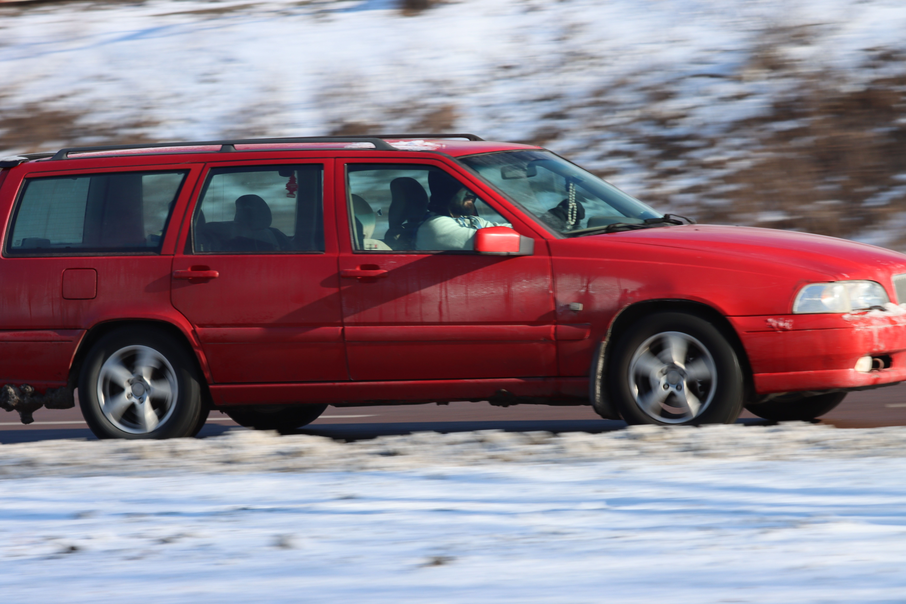

Why Does My Car Pull to One Side While Driving?
If your car pulls to the left or right, the simplest fix is often uneven tire pressure. If pressure is balanced, the cause is typically wheel mis-alignment (camber/caster angles), uneven tire wear, or a dragging brake caliper pulling the vehicle toward the sticking side.

Primary Causes: Tire Pressure vs. Alignment vs. Mechanical Issues
When a car refuses to hold a straight line on a flat road, driving becomes exhausting and unsafe. Here is how to narrow down what is causing your vehicle to drift:
1. Uneven Tire Pressure (Low Tire)
An underinflated tire has a smaller rolling diameter and higher rolling resistance than a properly inflated one. This pulls the vehicle directly toward the side with the lower pressure. Always check cold PSI before paying for shop diagnostic tests.
2. Wheel Misalignment
Hitting potholes, curbs, or rough road surfaces can knock your wheel alignment out of spec. Changes in camber (inward/outward tilt) or caster (steering pivot angle) will constantly drag your vehicle off-center toward the side with less caster or more positive camber.
3. Sticking Brake Caliper
If a front brake caliper piston or guide pin seizes, the pad remains pressed against the rotor while driving. This continuous drag pulls the vehicle to that side, builds excessive heat, and creates a faint burning smell from the affected wheel well.
4. Tire Conicity (Radial Pull)
Manufacturing defects or uneven belt wear inside a tire can give it a slightly conical shape. Because a cone naturally rolls in a circle, a conically worn tire forces the steering to pull left or right even when wheel alignment angles are perfect.
Simple Diagnostic Steps You Can Do Yourself
- Check Pressure First: Inflate all tires to the exact specification listed on the driver's door jamb sticker.
- Swap Front Tires: Move the front left tire to the front right. If the pull flips direction, you have a defective or unevenly worn tire (radial pull).
- Check Wheel Heat: After driving, carefully place your hand near (not directly on) the front wheels. An unusually hot wheel indicates a stuck dragging brake.
Frequently Asked Questions
Yes. Most paved roads are sloped ("crowned") slightly to the right to allow water drainage. On crowned roads, a minor drift to the right is expected.
Yes. Worn ball joints, control arm bushings, or tie rod ends allow wheels to shift position dynamically under power or braking, causing unpredictable pulling.